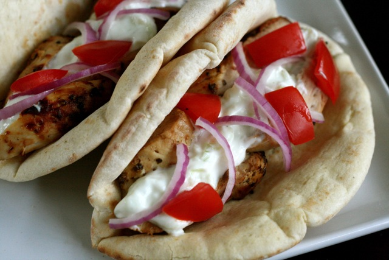

Chicken Gyros Recipe
Recipes
Ingredients:
- 2lbs chicken thigh fillets
- 4 pcs pita bread
- olives
- pickled onions
Marinade:
- 3 large garlic cloves
- 1 tbsp white wine vinegar
- 3 tbsp lemon juice
- 3 tbsp Greek yogurt
- 1 1/2 tsp dried oregano
- 1 tsp salt
- Black pepper (to taste)
Tzatziki:
- 2 cucumbers
- 1 1/4 cups Greek yogurt
- 1 tbsp lemon juice
- 1 tbsp extra virgin olive oil
- 1 garlic clove
- 1/4 tsp salt
- Black pepper (to taste)
Instructions:
-
Place the marinade ingredients into a bag with the chicken.
Massage to mix. Marinate for 3 hours.
-
Cut cucumber in half length wise. Scoop out seeds. Grate
cucumber into a bowl.
- Add remaining ingredients for tzatziki and mix to combine.
-
Brush outdoor grill with oil then preheat over medium high heat.
-
Cook chicken for 2 to 3 minutes each side, until internal
temperature is around 155.
-
Remove chicken from grill and put on plate. Let sit to come up
to temperature.
- Cut chicken into strips.
-
Get pita bread out and put chicken on it, then olives, pickled
onions, and tzatziki. Enjoy!